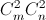

On two parallel lines a and b, the points $A_1, A_2, ..., A_m$ and $B_1, B_2, ..., B_n$ are chosen, respectively, and all of the segments of the form $A_iB_j$ $(where 1 \leq i \leq m, 1 \leq j \leq n)$. How many intersection points will there be if it is known that no three of these segments intersect at one point?
Each two intersecting segments are diagonals of a quadrangle whose two vertices lie on a, and the other two lie on b. See also problem number 30695.
Nothing to translate.
 points.